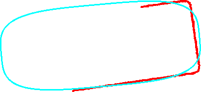

Feature Fitting
When data is extracted from in image it is often converted into a more
convenient abstract, higher level, representation.
This is generally done by fitting a model to the data.
Several problems exist, in particular robustness and efficiency.
Under noisy conditions many fitting methods fail, while complicated non-linear
models may be difficult to fit and require slow iterative techniques.
Work is underway on developing new methods for fitting ellipses and
superellipses to data.
For the former this involves applying robust statistics to improve
robustness.
For the latter new error functionals have been developed as well as new
simpler, faster fitting methods.
An example of fitting a superellipse to the data (in red) is shown below.
With so much data missing it is extremely difficult to get a reasonable
fit.

More details are given in:
-
X. Zhang and P.L. Rosin,
"Superellipse fitting to partial data",
Pattern Recognition, vol. 36, no. 3, pp. 743-752, 2003
-
P.L. Rosin, "Fitting superellipses", IEEE Trans. Pattern Analysis and Machine Intelligence,
vol. 22, no. 7, pp. 726-732, 2000.
-
P.L. Rosin, "Further five-point fit ellipse fitting", Graphical Models and Image Processing,
vol. 61, no. 5, pp. 245-259, 1999.
-
P.L. Rosin, "A note on the least squares fitting of ellipses", Pattern Recognition Letters,
vol. 14,
pp. 799-808, 1993.
-
P.L. Rosin,
"Ellipse fitting using orthogonal hyperbolae and Stirling's oval",
Graphical Models and Image Processing,
vol. 60, no. 3, pp. 209-213, 1998.
-
P.L. Rosin, "Ellipse fitting by accumulating five-point fits", Pattern Recognition Letters,
vol. 14,
pp. 661-669, 1993.
You can download
code
to implement several ellipse fitting methods
as well as
code
to implement several superellipse fitting methods.
return to Paul Rosin's homepage